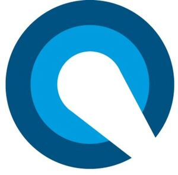

Trade Mark Journal No.2025/048 28 November 2025
WO0000001887193 (3,9,10,11,42)
Office of origin: Germany
Date of International Registration:8 August 2025
Date of designation in the UK:
8 August 2025

Light blue and dark blue.
International priority date claimed: 13 March 2025
(Germany)
- Class 3
- Cleaning and fragrancing preparations, other than for personal use; bleaching preparations and other substances for laundry use; polishing preparations; soap; perfumery and fragrances; ethereal oils; cosmetics.
- Class 9
- Scientific, nautical, surveying, photographic, cinematographic, optical, weighing, measuring, signalling, checking [supervision], life-saving and teaching apparatus and instruments; information technology and audio-visual, multimedia and photographic equipment; display devices; television receivers; film and video equipment; high-resolution video systems; apparatus and instruments for conducting, switching, transforming, accumulating, regulating or controlling electricity; electrical and electronic components; apparatus for recording, transmission or reproduction of sound or images; compact discs; DVDs; other digital recording media; hardware for data processing in the field of lighting technology; computers in the field of lighting technology; beacon lamps; optical lanterns; starters for electric lights; computer software in the field of lighting technology; software for monitoring, analysing, controlling and running physical world operations; speech recognition apparatus; speech recognition software; artificial intelligence and machine learning software; mounting brackets adapted for computers; computer peripheral devices; optical apparatus, instruments, enhancers and correctors; laser pointers.
- Class 10
- Surgical, medical, dental and veterinary apparatus and instruments; diagnostic, examination, and monitoring equipment; medical imaging equipment; dental equipment; surgical lamps; curing lamps for medical purposes; lamps for medical purposes; lamps for producing polarised light for medical use; lamps for use with medical instruments; lamps for use with dental instruments; medical imaging apparatus; medical examination lamps; ultraviolet ray lamps for medical purposes; medical surgical lights; medical examination lamps; disposable items for medical and veterinary devices and instruments, namely disposable speculums, disposable syringes, disposable prophy angles, disposable nozzles for dental syringes, disposable needles for hypodermic syringes, disposable lancets for finger puncture, disposable gloves for medical purposes, disposable microtome blades, disposable steam-heated patches for therapeutic purposes, disposable steam-heated masks for therapeutic purposes, disposable hypodermic syringes for surgical use, disposable sanitary masks for protection against viral infection; endoscopic light.
- Class 11
- Apparatus for lighting, heating, steam generating, cooking, refrigerating, drying, ventilating, water supply and sanitary purposes; lighting installations [lamps]; luminaires; flexible lamps; roof lights [lamps]; electrical lighting fixtures; electric lamps; electric lights; sockets for electric lights; filters for use with lamps; lamp mantles; glass covers for lamps; germicidal lamps; electric lamps; lamps; lamps fitted with extendible supports; suspensions for lamps; light assemblies; burners for lamps; lamp fittings; lamp sockets; lamp housing; lamp glasses; lamp mantles; lamp holders; lamp globes; lamp reflectors; lamp tubes, cylinders; lamp chimneys; lamp shades; lampshade holders; lamp bases; lamp finials; lamps; lighting ornaments [fittings]; lamp chimneys; LED luminaires; LED lenses, as parts of LED installations; luminaires; opaque casings for lights; cord pendants [light fittings]; lamp reflectors; lamp shades; shades for lights; portable lamps [for illumination].
- Class 42
- Science and technology services; design services; engineering services; component testing; consultancy services relating to quality control; design, drafting and development of medical technology apparatus and devices, in particular lighting technology apparatus and devices; design of moulded parts made of plastic or metal; services provided by a product designer, particularly in the field of lighting technology; quality control; technical measuring and testing; design and development of medical technology; material testing services; testing of machinery; quality control; material testing; technical research in the field of medical technology; medical and pharmacological research services.
Dr. Mach GmbH & Co. KG
Representative: Weickmann & Weickmann Patent- und Rechtsanwälte PartmbB, Richard-Strauss-Straße 80, 81679 München, GERMANY